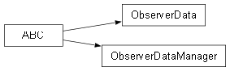

DataObserver package¶

Submodules¶
DataObserver.ObserverData module¶
Copyright (C) 2026 : Milad Zahediyami
This program is free software: you can redistribute it and/or modify it under the terms of the GNU General Public License as published by the Free Software Foundation, either version 3 of the License, or (at your option) any later version.
This program is distributed in the hope that it will be useful, but WITHOUT ANY WARRANTY; without even the implied warranty of MERCHANTABILITY or FITNESS FOR A PARTICULAR PURPOSE. See the GNU General Public License for more details.
You should have received a copy of the GNU General Public License along with this program. If not, see <http://www.gnu.org/licenses/>.
author Milad Zahediyami (milad.zahediyami@u-bordeaux.fr) IMS (UMR CNRS 5218 / University of Bordeaux)
ObserverData.py
Observer interface for the Observer Pattern used in the Digital Twin system. Any class that wants to be notified when data changes must implement (inherit from) this abstract base class and override update().
@author @version 1.0 (Python port)
- class DataObserver.ObserverData.ObserverData[source]¶
Bases:
ABCGeneric Observer interface.
In Java this interface was parameterized with <T> (the type of data being observed). Python does not need generics for this to work correctly, so the type parameter is simply dropped; ‘updated_data’ can be any object (in this project it will always be a DT_Data instance).
DataObserver.ObserverDataManager module¶
Copyright (C) 2026 : Milad Zahediyami
This program is free software: you can redistribute it and/or modify it under the terms of the GNU General Public License as published by the Free Software Foundation, either version 3 of the License, or (at your option) any later version.
This program is distributed in the hope that it will be useful, but WITHOUT ANY WARRANTY; without even the implied warranty of MERCHANTABILITY or FITNESS FOR A PARTICULAR PURPOSE. See the GNU General Public License for more details.
You should have received a copy of the GNU General Public License along with this program. If not, see <http://www.gnu.org/licenses/>.
author Milad Zahediyami (milad.zahediyami@u-bordeaux.fr) IMS (UMR CNRS 5218 / University of Bordeaux)
ObserverDataManager.py
Subject interface (Publisher) in the Observer Pattern. Classes that hold data and want to notify observers when data changes must implement (inherit from) this abstract base class.
- class DataObserver.ObserverDataManager.ObserverDataManager[source]¶
Bases:
ABCGeneric Subject/Publisher interface.
As with ObserverData, the Java generic type parameter <T> is dropped since Python does not require it for correct behaviour (dynamic typing).
- abstract notify_observers()[source]¶
Notifies all registered observers that the data has changed. This method is called internally whenever data is updated.